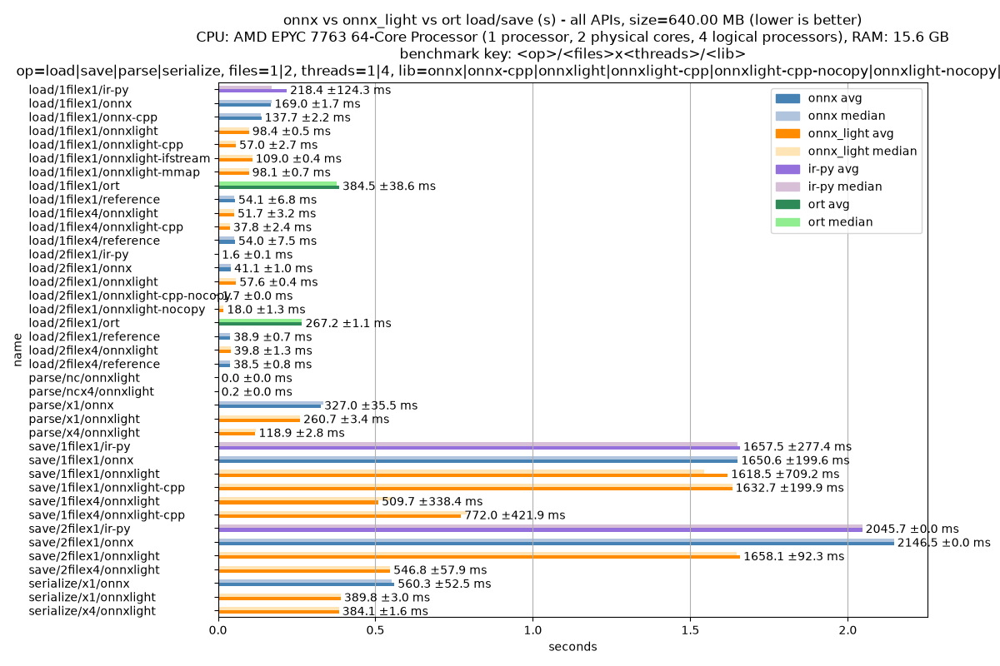
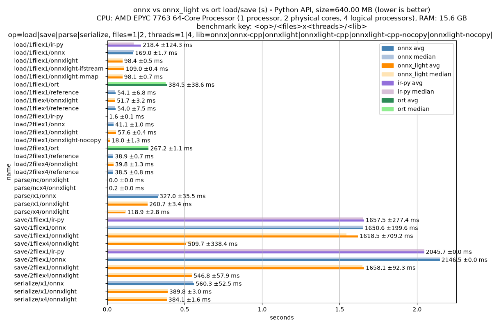
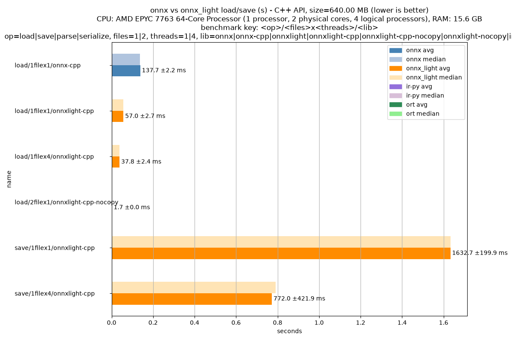
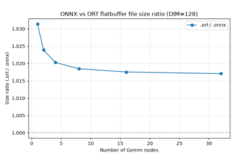

Note
Go to the end to download the full example code.
Measures loading and saving time for an ONNX model#
This script builds a small ONNX model and benchmarks the time to load
and save it using onnx, onnx_light.onnx, and
onnxruntime.
When the standalone C++ example executables load_onnx_time,
load_onnx_light_time, and
save_onnx_light_time are available, it also includes their timing output.
The model structure is identical in all cases.
Use --model <path> on the command line to benchmark an existing ONNX file
instead of the default synthetic model. The script also prints a short
statistics block (node count, initializer count, total tensor size, etc.)
for whichever model is used.
The onnx_light.onnx implementation does not depend on protobuf and
therefore avoids the overhead of the protobuf serialization layer.
It also supports parallel loading of tensor weights through the
num_threads keyword and loading models stored with external data.
When loading a single-file model, onnx_light.onnx memory-maps the
.onnx file (mmap on POSIX, CreateFileMapping on Windows) and
parses directly out of the mapped region — there is no double-buffered
ifstream + read-ahead step on top of it. The same memory-mapping
strategy is used for the external weights file when a model is stored
with external data: each weights file is mapped once into a shared buffer
that all tensors point into.
This brings load/1filex1/onnxlight-cpp close to (or ahead of)
load/1filex1/onnx-cpp on parser-bound models with many small
initializers. When no_copy=True is requested with a single-file
model the loader still copies inline raw_data (so that the parsed
ModelProto does not depend on the lifetime of the mmap region):
zero-copy of inline raw data is supported only for bytes inputs and
for external weights files.
One key advantage over the onnx package is zero-copy parsing:
when no_copy=True is passed to onnx_light.onnx.load() (or via
ParseOptions), tensor raw_data blobs are
not copied into new buffers. Instead each TensorProto stores a
direct pointer into the serialized bytes. This eliminates one
malloc + memcpy per tensor initializer and is therefore especially
beneficial for models with many large weight tensors.
For models stored with external data, no_copy=True enables a related
fast path: each external weights file is read once into a shared buffer,
and every tensor points into that shared storage instead of owning a
separate copy.
Warning
When no_copy=True is used with an in-memory bytes object,
the caller must keep that original buffer alive for as long as the
parsed model is in use. External-data files do not have that
lifetime constraint because onnx_light keeps the shared file
buffers alive.
For onnxruntime, the session is created with all graph optimizations
disabled (ORT_DISABLE_ALL) so that the measurement reflects only the
model loading overhead rather than compilation or fusion costs.
onnx,onnxlight,ort: useonnx,onnx-light, oronnxruntimereference: builds anonnx_light.onnx.reference.ReferenceEvaluatorfrom the model1filex1: saves in a single file with 1 thread1filex4: saves in a single file with 4 threads2filex1: saves in a file and another for external data with 1 thread2filex4: saves in a file and another for external data with 4 threads
Selectable benchmark scenarios (via --scenario):
load, save, serialize, parse, cpp, all.
The cpp scenario runs the standalone C++ timing executables
(load_onnx_time, load_onnx_light_time, save_onnx_light_time)
when they are available. The executable discovery automatically skips
them when the CI environment variable is set, so no results are
produced in CI environments where the executables have not been built.
Use --model <path> to supply an existing single-file ONNX model.
When provided the synthetic model is not created, and the supplied file
is used directly as the benchmark target. The external-data variant
(used for 2file benchmarks) is still derived from the loaded model
and written to the temporary directory.
Alternatively, use --model-id <huggingface_repo_id> to download an
ONNX model from the Hugging Face Hub and
benchmark it. For example, --model-id onnx-community/Qwen3-0.6B-ONNX
downloads onnx-community/Qwen3-0.6B-ONNX. The specific
file to download inside the repository can be selected with
--model-file (default onnx/model.onnx). When the download
fails (for example due to a connectivity issue) the script prints a
warning and falls back to the default synthetic model so the example
can still run in offline environments.
The --external flag makes the default synthetic model store its weights
in a companion external data file, which is useful to exercise the
external-weights loading path.
import argparse
import importlib
import math
import os
import pathlib
import re
import shutil
import tempfile
import time
import urllib.error
import urllib.request
import numpy as np
import pandas
import onnx_light.onnx.helper as oh
import onnx_light.onnx.numpy_helper as onh
try:
import onnxruntime as ort
except ImportError:
ort = None
if ort is not None:
_ort_sess_opts = ort.SessionOptions()
_ort_sess_opts.graph_optimization_level = ort.GraphOptimizationLevel.ORT_DISABLE_ALL
else:
_ort_sess_opts = None
print("WARNING: onnxruntime is not installed, skipping onnxruntime benchmarks.")
import onnx_light.onnx as onnxl
import onnx_light.onnx.helper as onnxlh
from onnx_light.onnx.reference import ReferenceEvaluator
from onnx_light.doc import (
find_standalone_executable,
get_cpu_topology,
get_processor_name,
get_total_memory_gb,
measure_cpp_with_example,
)
Setup#
Define benchmark parameters and command-line argument parsers. Use –model <path> to benchmark an existing ONNX file instead of the default synthetic model built from make_model().
N_INIT = 40
DIM = 256 if os.environ.get("UNITTEST_GOING") == "1" else 2048
BENCHMARK_SCENARIOS = ("load", "save", "serialize", "parse", "cpp")
def _parse_args(args=None) -> argparse.Namespace:
"""Parses all command-line arguments for plot_onnx_time.py.
Builds a single :class:`argparse.ArgumentParser` covering the
benchmark scenarios (``--scenario``), the local model path
(``--model``) and the Hugging Face download options (``--model-id``,
``--model-file``).
Returns:
The parsed :class:`argparse.Namespace`. ``scenarios`` is a set of
the selected benchmark scenarios (all of them when ``all`` is
requested or nothing is specified).
"""
parser = argparse.ArgumentParser(
description="Runs one or several benchmark scenarios for plot_onnx_time.py."
)
parser.add_argument(
"--scenario",
dest="scenarios",
action="append",
choices=(*BENCHMARK_SCENARIOS, "all"),
help=(
"Scenario to execute. May be specified multiple times. "
"Supported values: load, save, serialize, parse, cpp, all."
),
)
parser.add_argument(
"--model",
dest="model_path",
default=None,
help=(
"Path to an existing single-file ONNX model to benchmark "
"instead of the default synthetic model."
),
)
parser.add_argument(
"--model-id",
dest="model_id",
default=None,
help=(
"Hugging Face repository id (e.g. onnx-community/Qwen3-0.6B-ONNX) "
"from which to download an ONNX model to benchmark."
),
)
parser.add_argument(
"--model-file",
dest="model_file",
default="onnx/model.onnx",
help=(
"Path within the Hugging Face repository of the ONNX file to "
"download when --model-id is provided. Defaults to onnx/model.onnx."
),
)
parser.add_argument(
"--external",
dest="external",
action="store_true",
help=(
"When building the default synthetic model, store its weights in an "
"external data file (produces a model with external weights)."
),
)
parsed, _ = parser.parse_known_args(args=args)
values = parsed.scenarios or ["all"]
if "all" in values:
parsed.scenarios = set(BENCHMARK_SCENARIOS)
else:
parsed.scenarios = set(values)
return parsed
def _download_hf_model(model_id: str, model_file: str, dest_dir: str) -> str | None:
"""Downloads an ONNX model file from the Hugging Face Hub.
The file is fetched from
``https://huggingface.co/{model_id}/resolve/main/{model_file}`` and
written under *dest_dir*. Any download failure (network error,
HTTP error, OS error, ...) is caught and reported with a warning;
the function then returns ``None`` so that callers can fall back to
a default model.
Args:
model_id: Hugging Face repository identifier.
model_file: Path of the ONNX file inside the repository.
dest_dir: Directory in which to write the downloaded file.
Returns:
Absolute path to the downloaded file, or ``None`` when the
download failed.
"""
url = f"https://huggingface.co/{model_id}/resolve/main/{model_file}"
local_path = os.path.abspath(os.path.join(dest_dir, os.path.basename(model_file)))
os.makedirs(os.path.dirname(local_path) or ".", exist_ok=True)
print(f"Downloading {url} -> {local_path}")
try:
urllib.request.urlretrieve(url, local_path) # noqa: S310
except (urllib.error.URLError, urllib.error.HTTPError, OSError, ValueError) as exc:
print(
f"WARNING: failed to download {url}: {exc}. "
"Falling back to the default synthetic model."
)
if os.path.exists(local_path):
try:
os.remove(local_path)
except OSError:
pass
return None
return local_path
_CLI_ARGS = _parse_args()
SELECTED_SCENARIOS = _CLI_ARGS.scenarios
_CLI_MODEL_PATH = _CLI_ARGS.model_path
_CLI_MODEL_ID = _CLI_ARGS.model_id
_CLI_MODEL_FILE = _CLI_ARGS.model_file
_CLI_EXTERNAL = _CLI_ARGS.external
def _run_scenario(name: str) -> bool:
"""Checks whether the given scenario name is selected for execution."""
return name in SELECTED_SCENARIOS
def make_model(n_init: int = N_INIT, dim: int = DIM) -> onnxl.ModelProto:
"""Returns a synthetic ONNX model with *n_init* Gemm initializers of size *dim*."""
initializers = []
nodes = []
inputs = [oh.make_tensor_value_info("X", onnxl.TensorProto.FLOAT, [None, dim])]
prev = "X"
for i in range(n_init):
weight_name = f"W{i}"
out_name = f"Y{i}"
w = np.random.randn(dim, dim).astype(np.float32)
initializers.append(onh.from_array(w, name=weight_name))
nodes.append(oh.make_node("Gemm", [prev, weight_name], [out_name], transB=1))
prev = out_name
outputs = [oh.make_tensor_value_info(prev, onnxl.TensorProto.FLOAT, [None, dim])]
graph = oh.make_graph(nodes, "bench_graph", inputs, outputs, initializer=initializers)
model = oh.make_model(graph, opset_imports=[oh.make_opsetid("", 18)], ir_version=9)
return model
def _tensor_data_bytes(tensor: onnxl.TensorProto) -> int:
"""Returns the in-memory byte count of a TensorProto's stored data.
Uses :func:`onnx_light.onnx.helper.tensor_dtype_to_np_dtype` to map
the element type to a numpy dtype and derives the byte count from the
tensor dimensions, avoiding a full array materialisation.
Returns:
Byte count of the tensor's data, or ``0`` when it cannot be determined.
"""
if tensor.raw_data:
return len(tensor.raw_data)
if tensor.data_type not in onnxlh.TENSOR_TYPE_MAP:
return 0
np_dtype = onnxlh.tensor_dtype_to_np_dtype(tensor.data_type)
n_elements = math.prod(tensor.dims) if tensor.dims else 1
return int(np_dtype.itemsize * n_elements)
def print_model_stats(model: onnxl.ModelProto, file_path: str | None = None) -> None:
"""Prints summary statistics for *model* to stdout.
Args:
model: The ONNX model to inspect.
file_path: Optional path to the model file on disk; when given the
file size is included in the output.
"""
graph = model.graph
n_nodes = len(graph.node)
n_initializers = len(graph.initializer)
n_inputs = len(graph.input)
n_outputs = len(graph.output)
total_tensor_bytes = sum(_tensor_data_bytes(t) for t in graph.initializer)
opsets = ", ".join(f"{op.domain or 'ai.onnx'}={op.version}" for op in model.opset_import)
print("Model statistics")
print("----------------")
print(f" IR version : {model.ir_version}")
print(f" Opset(s) : {opsets}")
print(f" Number of nodes : {n_nodes}")
print(f" Number of inputs : {n_inputs}")
print(f" Number of outputs : {n_outputs}")
print(f" Number of initializers : {n_initializers}")
print(f" Total initializer size : {total_tensor_bytes / 2 ** 20:.3f} MB")
if file_path and os.path.exists(file_path):
print(f" File size : {os.path.getsize(file_path) / 2 ** 20:.3f} MB")
print(f" Serialized model size : {model.ByteSize() / 2 ** 20:.3f} MB")
Model setup#
Either load an existing model supplied via --model or build the default
synthetic one and write it to a temporary directory.
tmp_dir = "temp_plot_onnx_time"
if not os.path.exists(tmp_dir):
os.mkdir(tmp_dir)
def onnx_load(onnx_path):
import onnx
return onnx.load(onnx_path)
def _model_has_external_data(model: onnxl.ModelProto) -> bool:
"""Returns True when any initializer of *model* stores its data externally."""
return any(
init.data_location == onnxl.TensorProto.EXTERNAL for init in model.graph.initializer
)
def _save_default_model(model: onnxl.ModelProto, tmp_dir: str, external: bool) -> str:
"""Saves the synthetic *model* to *tmp_dir* and returns its file path.
When *external* is True the weights are written to a companion external
data file so the produced model has external weights.
Returns:
The path of the saved ONNX model file.
"""
onnx_path = os.path.join(tmp_dir, "bench.onnx")
if external:
onnxl.save(
model,
onnx_path,
save_as_external_data=True,
location="bench.onnx.data",
size_threshold=0,
)
else:
onnxl.save(model, onnx_path)
return onnx_path
def onnx_save(model, onnx_path):
import onnx
assert isinstance(model, onnx.ModelProto), f"Unexpected type {type(model)}"
onnx.save(model, onnx_path)
def _maybe_import_onnx_ir():
"""Returns the optional ``onnx_ir`` module when available, otherwise ``None``."""
try:
return importlib.import_module("onnx_ir")
except ImportError:
return None
if _CLI_MODEL_PATH is not None:
onnx_path = os.path.abspath(_CLI_MODEL_PATH)
model = onnx_load(onnx_path)
print(f"Using provided model: {onnx_path}")
elif _CLI_MODEL_ID is not None:
downloaded = _download_hf_model(_CLI_MODEL_ID, _CLI_MODEL_FILE, tmp_dir)
if downloaded is not None:
onnx_path = downloaded
model = onnx_load(onnx_path)
print(f"Using model from Hugging Face id {_CLI_MODEL_ID!r}: {onnx_path}")
else:
model = make_model()
onnx_path = _save_default_model(model, tmp_dir, _CLI_EXTERNAL)
else:
model = make_model()
onnx_path = _save_default_model(model, tmp_dir, _CLI_EXTERNAL)
onx = onnx_load(onnx_path)
_has_external_data = _model_has_external_data(onx)
onxl = onnxl.load(onnx_path, load_external_data=_has_external_data)
onxl_x4 = onnxl.load(onnx_path, num_threads=4, load_external_data=_has_external_data)
# ``onnx.ModelProto.ByteSize`` does not account for external weights, so the
# in-memory model size is measured on the ``onnx_light`` model ``onxl``. When
# the model stores its weights externally, ``onxl`` is loaded with
# ``load_external_data=True`` (see above), which pulls the external tensors into
# memory so ``ByteSize`` reflects the real size; single-file models already have
# their weights inline.
size_bytes = onxl.ByteSize()
print(f"Model size: {size_bytes / 2 ** 20:.3f} MB")
file_size = os.path.getsize(onnx_path)
print(f"File size : {file_size / 2 ** 20:.3f} MB")
onnx_ir_module = _maybe_import_onnx_ir()
onx_ir = (
onnx_ir_module.load(onnx_path)
if onnx_ir_module is not None and (_run_scenario("load") or _run_scenario("save"))
else None
)
ext_load_onnx = os.path.abspath(os.path.join(tmp_dir, "ext_load.onnx"))
ext_load_data = os.path.abspath(os.path.join(tmp_dir, "ext_load.onnx.data"))
onnxl.save(onxl, ext_load_onnx, location=ext_load_data)
Model size: 640.002 MB
File size : 640.002 MB
Model statistics#
Print a summary of the model: number of nodes, initializers (tensors), total weight size, file size, and serialized size.
print_model_stats(onxl, onnx_path)
Model statistics
----------------
IR version : 9
Opset(s) : ai.onnx=18
Number of nodes : 40
Number of inputs : 1
Number of outputs : 1
Number of initializers : 40
Total initializer size : 640.000 MB
File size : 640.002 MB
Serialized model size : 640.002 MB
Benchmark helper.
MIN_TIME_THRESHOLD = 1e-9
CPP_LOAD_METRIC_PATTERN = re.compile(
r"^\s*(Average|Median|Min|Max|Std|Standard deviation) load \(ms\)\s*:\s*([0-9.eE+-]+)\s*$"
)
CPP_SAVE_METRIC_PATTERN = re.compile(
r"^\s*(Average|Median|Min|Max|Std|Standard deviation) save \(ms\)\s*:\s*([0-9.eE+-]+)\s*$"
)
WINDOWS_BUILD_CONFIGS = ("Release", "RelWithDebInfo", "Debug", "MinSizeRel")
def measure(name: str, fn, n: int = 5, warmup: int = 1) -> dict:
"""
Executes *fn* with warm-up iterations and records timing statistics.
Args:
name: Benchmark name.
fn: Callable to execute.
n: Number of measured iterations.
warmup: Number of non-measured warm-up iterations.
Returns:
A dictionary containing name, median, avg, min, max, and std.
"""
for _ in range(max(0, warmup)):
fn()
times = []
for _ in range(n):
t0 = time.perf_counter()
fn()
times.append(time.perf_counter() - t0)
arr = np.array(times)
return {
"name": name,
"median": float(np.median(arr)),
"avg": float(np.mean(arr)),
"min": float(np.min(arr)),
"max": float(np.max(arr)),
"std": float(np.std(arr)),
}
def _flush_file(path: str) -> None:
"""Flushes one file descriptor so benchmark timing includes write-back."""
with open(path, "r+b") as stream:
stream.flush()
os.fsync(stream.fileno())
def print_stats(name: str, stats: dict) -> None:
"""Prints timing statistics (average, median, max, and standard deviation) in milliseconds."""
print(
f"{name:<35} avg={stats['avg'] * 1e3:.1f} ms"
f" median={stats['median'] * 1e3:.1f} ms"
f" max={stats['max'] * 1e3:.1f} ms"
f" std={stats['std'] * 1e3:.1f} ms"
)
def _find_load_onnx_time_executable(reasons: list[str] | None = None) -> str | None:
"""Locates the standalone C++ timing executable.
Args:
reasons: Optional list that receives a human-readable description of why
the executable could not be located when ``None`` is returned.
Returns:
The path to ``load_onnx_time`` if available, otherwise ``None``.
"""
return find_standalone_executable(
"load_onnx_time",
[
pathlib.Path("build/load-onnx-time-example/load_onnx_time"),
pathlib.Path("build/examples/load_onnx_time/load_onnx_time"),
pathlib.Path("build-load-onnx-time/load_onnx_time"),
],
script_file=globals().get("__file__"),
windows_build_configs=WINDOWS_BUILD_CONFIGS,
reason_out=reasons,
)
def _find_load_onnx_light_time_executable(reasons: list[str] | None = None) -> str | None:
"""Locates the standalone ``load_onnx_light_time`` executable.
Args:
reasons: Optional list that receives a human-readable description of why
the executable could not be located when ``None`` is returned.
Returns:
The path to ``load_onnx_light_time`` if available, otherwise ``None``.
"""
return find_standalone_executable(
"load_onnx_light_time",
[
pathlib.Path("build/load-onnx-light-time-example/load_onnx_light_time"),
pathlib.Path("build/examples/load_onnx_light_time/load_onnx_light_time"),
pathlib.Path("build-load-onnx-light-time/load_onnx_light_time"),
],
script_file=globals().get("__file__"),
windows_build_configs=WINDOWS_BUILD_CONFIGS,
reason_out=reasons,
)
def _measure_cpp_load_with_example(
onnx_file: str,
n: int = 20,
num_threads: int = 1,
executable_name: str = "load_onnx_light_time",
file_count: int = 1,
no_copy: bool = False,
touch_raw_data_pages: bool = False,
reasons: list[str] | None = None,
) -> dict | None:
"""Measures C++ loading performance through a standalone executable.
Args:
onnx_file: Model path to pass to the standalone executable.
n: Number of iterations to pass to the standalone executable.
num_threads: Number of loading threads to pass to the standalone executable.
executable_name: Executable selector to use:
``"load_onnx_time"`` or ``"load_onnx_light_time"``.
file_count: Number of files involved in the benchmark key.
no_copy: Whether to request ``no_copy`` mode from ``load_onnx_light_time``.
touch_raw_data_pages: Whether to request page touching during no-copy loading
from ``load_onnx_light_time``.
reasons: Optional list that receives a human-readable description of why the
standalone executable could not be located when ``None`` is returned.
Returns:
A benchmark dictionary matching :func:`measure` output keys if successful,
otherwise ``None``.
"""
if file_count <= 0:
raise ValueError(f"file_count must be positive, got {file_count!r}")
if executable_name == "load_onnx_time":
if no_copy:
raise ValueError("no_copy is only supported with 'load_onnx_light_time'")
executable = _find_load_onnx_time_executable(reasons=reasons)
result_name = f"load/{file_count}filex{num_threads}/onnx-cpp"
elif executable_name == "load_onnx_light_time":
executable = _find_load_onnx_light_time_executable(reasons=reasons)
lib_name = "onnxlight-cpp-nocopy" if no_copy else "onnxlight-cpp"
result_name = f"load/{file_count}filex{num_threads}/{lib_name}"
else:
raise ValueError(
"executable_name must be 'load_onnx_time' or "
f"'load_onnx_light_time', got {executable_name!r}"
)
args = [onnx_file, str(n), str(num_threads)]
if no_copy:
args.append("nocopy_touch" if touch_raw_data_pages else "nocopy")
return measure_cpp_with_example(
executable=executable,
args=args,
metric_pattern=CPP_LOAD_METRIC_PATTERN,
result_name=result_name,
executable_name=executable_name,
)
def _find_save_onnx_light_time_executable(reasons: list[str] | None = None) -> str | None:
"""Locates the standalone C++ save-timing executable.
Args:
reasons: Optional list that receives a human-readable description of why
the executable could not be located when ``None`` is returned.
Returns:
The path to ``save_onnx_light_time`` if available, otherwise ``None``.
"""
return find_standalone_executable(
"save_onnx_light_time",
[
pathlib.Path("build/save-onnx-light-time-example/save_onnx_light_time"),
pathlib.Path("build/examples/save_onnx_light_time/save_onnx_light_time"),
pathlib.Path("build-save-onnx-light-time/save_onnx_light_time"),
],
script_file=globals().get("__file__"),
windows_build_configs=WINDOWS_BUILD_CONFIGS,
reason_out=reasons,
)
def _measure_cpp_save_with_example(
onnx_file: str, n: int = 20, num_threads: int = 1, reasons: list[str] | None = None
) -> dict | None:
"""Measures C++ one-file save performance through ``save_onnx_light_time``.
Args:
onnx_file: Model path to pass to the standalone executable.
n: Number of iterations to pass to the standalone executable.
num_threads: Number of saving threads to pass to the standalone executable.
reasons: Optional list that receives a human-readable description of why the
standalone executable could not be located when ``None`` is returned.
Returns:
A benchmark dictionary matching :func:`measure` output keys if successful,
otherwise ``None``.
"""
executable = _find_save_onnx_light_time_executable(reasons=reasons)
if executable is None:
return None
with tempfile.TemporaryDirectory() as tmp_save_dir:
return measure_cpp_with_example(
executable=executable,
args=[onnx_file, tmp_save_dir, str(n), str(num_threads), "onefile"],
metric_pattern=CPP_SAVE_METRIC_PATTERN,
result_name=f"save/1filex{num_threads}/onnxlight-cpp",
executable_name="save_onnx_light_time",
)
# Load scenarios
# --------------
data = []
if _run_scenario("load"):
# %%
# Load with onnx.
data.append(measure("load/1filex1/onnx", lambda: onnx_load(onnx_path)))
print_stats("load/1filex1/onnx", data[-1])
# %%
# Load with ``onnx_light.onnx``.
data.append(measure("load/1filex1/onnxlight", lambda: onnxl.load(onnx_path, num_threads=1)))
print_stats("load/1filex1/onnxlight", data[-1])
# %%
# Load with ``onnx_light.onnx`` using parallel tensor loading.
data.append(measure("load/1filex4/onnxlight", lambda: onnxl.load(onnx_path, num_threads=4)))
print_stats("load/1filex4/onnxlight", data[-1])
# %%
# Compare the two file-backed stream implementations explicitly:
# ``FileLoadMode.MMAP`` memory-maps the ``.onnx`` file (``mmap`` on POSIX,
# ``CreateFileMapping`` on Windows) and parses directly out of the mapped
# region, while ``FileLoadMode.IFSTREAM`` forces the buffered
# ``std::ifstream``-based reader. The default ``FileLoadMode.AUTO``
# behaves like ``MMAP`` for single-file models when ``no_copy`` is not
# requested; running both modes side by side highlights the gain (or
# cost) of memory mapping on the current platform/filesystem.
data.append(
measure(
"load/1filex1/onnxlight-mmap",
lambda: onnxl.load(onnx_path, file_load_mode="MMAP", num_threads=1),
)
)
print_stats("load/1filex1/onnxlight-mmap", data[-1])
data.append(
measure(
"load/1filex1/onnxlight-ifstream",
lambda: onnxl.load(onnx_path, file_load_mode="IFSTREAM", num_threads=1),
)
)
print_stats("load/1filex1/onnxlight-ifstream", data[-1])
# %%
# Load with ``ir-py`` when the optional ``onnx_ir`` package is installed.
if onnx_ir_module is not None:
data.append(measure("load/1filex1/ir-py", lambda: onnx_ir_module.load(onnx_path)))
print_stats("load/1filex1/ir-py", data[-1])
else:
print("onnx_ir is not installed, skipping ir-py single-file load benchmark.")
# %%
# Load with ``onnx_light.onnx.reference.ReferenceEvaluator``. This measures
# the time to build a Python reference runtime from the model, which
# includes loading the model and preparing the operators for evaluation.
data.append(
measure("load/1filex1/reference", lambda: ReferenceEvaluator(onnxl.load(onnx_path)))
)
print_stats("load/1filex1/reference", data[-1])
# %%
# Load with ``onnx_light.onnx.reference.ReferenceEvaluator`` using parallel
# tensor loading. The model is loaded with ``num_threads > 1`` before
# building the reference runtime.
data.append(
measure(
"load/1filex4/reference",
lambda: ReferenceEvaluator(onnxl.load(onnx_path, num_threads=4)),
)
)
print_stats("load/1filex4/reference", data[-1])
# %%
# Load with ``onnxruntime`` (all optimizations disabled).
# ``InferenceSession`` is created with ``ORT_DISABLE_ALL`` so the
# measurement captures only model loading overhead, not graph optimization.
if ort is not None:
data.append(
measure(
"load/1filex1/ort",
lambda: ort.InferenceSession(onnx_path, sess_options=_ort_sess_opts),
)
)
print_stats("load/1filex1/ort", data[-1])
load/1filex1/onnx avg=169.0 ms median=169.3 ms max=170.2 ms std=0.9 ms
load/1filex1/onnxlight avg=98.4 ms median=98.5 ms max=98.7 ms std=0.3 ms
load/1filex4/onnxlight avg=51.7 ms median=52.0 ms max=53.4 ms std=1.6 ms
load/1filex1/onnxlight-mmap avg=98.1 ms median=98.2 ms max=98.5 ms std=0.4 ms
load/1filex1/onnxlight-ifstream avg=109.0 ms median=109.0 ms max=109.3 ms std=0.2 ms
load/1filex1/ir-py avg=218.4 ms median=171.0 ms max=304.1 ms std=63.4 ms
load/1filex1/reference avg=54.1 ms median=52.8 ms max=60.9 ms std=3.5 ms
load/1filex4/reference avg=54.0 ms median=52.2 ms max=61.5 ms std=3.8 ms
load/1filex1/ort avg=384.5 ms median=377.0 ms max=419.1 ms std=19.7 ms
Serialize and Parse benchmarks#
def _serialize_onnx() -> bytes:
"""Serializes the ONNX model to bytes."""
return onx.SerializeToString()
def _serialize_onnxlight() -> bytes:
"""Serializes the onnx_light model to bytes."""
return onxl.SerializeToString()
def _serialize_onnxlight_x4() -> bytes:
"""Serializes the onnx_light model in parallel to bytes."""
return onxl.SerializeToString(opts_serial_x4)
if _run_scenario("serialize"):
opts_serial_x4 = onnxl.SerializeOptions()
opts_serial_x4.num_threads = 4
assert len(_serialize_onnx()) > 0
assert len(_serialize_onnxlight()) > 0
assert len(_serialize_onnxlight_x4()) > 0
data.append(measure("serialize/x1/onnx", _serialize_onnx))
print_stats("serialize/x1/onnx", data[-1])
data.append(measure("serialize/x1/onnxlight", _serialize_onnxlight))
print_stats("serialize/x1/onnxlight", data[-1])
data.append(measure("serialize/x4/onnxlight", _serialize_onnxlight_x4))
print_stats("serialize/x4/onnxlight", data[-1])
serialize/x1/onnx avg=560.3 ms median=550.4 ms max=601.3 ms std=26.8 ms
serialize/x1/onnxlight avg=389.8 ms median=389.0 ms max=392.5 ms std=1.5 ms
serialize/x4/onnxlight avg=384.1 ms median=384.2 ms max=385.3 ms std=0.8 ms
ParseFromString comparison between onnx and onnx_light.onnx.
def _parse_onnx() -> onnxl.ModelProto:
"""Parses ONNX bytes into a ModelProto."""
import onnx
parsed = onnx.ModelProto()
parsed.ParseFromString(serialized_onnx)
return parsed
def _parse_onnxlight() -> onnxl.ModelProto:
"""Parses onnx_light bytes into a ModelProto."""
parsed = onnxl.ModelProto()
parsed.ParseFromString(serialized_onnxlight)
return parsed
def _parse_onnxlight_x4() -> onnxl.ModelProto:
"""Parses onnx_light bytes in parallel into a ModelProto."""
parsed = onnxl.ModelProto()
parsed.ParseFromString(serialized_onnxlight, opts_parse_x4)
return parsed
def _parse_onnxlight_nc() -> onnxl.ModelProto:
"""Parses onnx_light bytes without copying raw tensor data (zero-copy)."""
parsed = onnxl.ModelProto()
parsed.ParseFromString(serialized_onnxlight, opts_parse_nc)
return parsed
def _parse_onnxlight_nc_x4() -> onnxl.ModelProto:
"""Parses onnx_light bytes in parallel without copying raw tensor data (zero-copy, 4 t)."""
parsed = onnxl.ModelProto()
parsed.ParseFromString(serialized_onnxlight, opts_parse_nc_x4)
return parsed
if _run_scenario("parse"):
serialized_onnx = onx.SerializeToString()
serialized_onnxlight = onxl.SerializeToString()
opts_parse_x4 = onnxl.ParseOptions()
opts_parse_x4.num_threads = 4
opts_parse_nc = onnxl.ParseOptions()
opts_parse_nc.no_copy = True
opts_parse_nc_x4 = onnxl.ParseOptions()
opts_parse_nc_x4.no_copy = True
opts_parse_nc_x4.num_threads = 4
parsed_onnx = _parse_onnx()
assert parsed_onnx.ir_version == onx.ir_version
assert len(parsed_onnx.graph.node) == len(onx.graph.node)
parsed_onnxlight = _parse_onnxlight()
assert parsed_onnxlight.ir_version == onxl.ir_version
assert len(parsed_onnxlight.graph.node) == len(onxl.graph.node)
parsed_onnxlight_x4 = _parse_onnxlight_x4()
assert parsed_onnxlight_x4.ir_version == onxl.ir_version
assert len(parsed_onnxlight_x4.graph.node) == len(onxl.graph.node)
parsed_onnxlight_nc = _parse_onnxlight_nc()
assert parsed_onnxlight_nc.ir_version == onxl.ir_version
assert len(parsed_onnxlight_nc.graph.node) == len(onxl.graph.node)
parsed_onnxlight_nc_x4 = _parse_onnxlight_nc_x4()
assert parsed_onnxlight_nc_x4.ir_version == onxl.ir_version
assert len(parsed_onnxlight_nc_x4.graph.node) == len(onxl.graph.node)
data.append(measure("parse/x1/onnx", _parse_onnx))
print_stats("parse/x1/onnx", data[-1])
data.append(measure("parse/x1/onnxlight", _parse_onnxlight))
print_stats("parse/x1/onnxlight", data[-1])
data.append(measure("parse/x4/onnxlight", _parse_onnxlight_x4))
print_stats("parse/x4/onnxlight", data[-1])
# %%
# Parse with zero-copy (``no_copy=True``): raw tensor data is not copied.
# The pointer inside each TensorProto points directly into ``serialized_onnxlight``.
# The bytes object **must** remain alive for as long as the parsed model is used.
data.append(measure("parse/nc/onnxlight", _parse_onnxlight_nc))
print_stats("parse/nc/onnxlight", data[-1])
# %%
# Parse with zero-copy **and** parallel tensor reads (``no_copy=True, num_threads=4``).
# Combines the allocation savings of zero-copy with multi-threaded I/O for large models.
data.append(measure("parse/ncx4/onnxlight", _parse_onnxlight_nc_x4))
print_stats("parse/ncx4/onnxlight", data[-1])
parse/x1/onnx avg=327.0 ms median=334.9 ms max=338.9 ms std=18.1 ms
parse/x1/onnxlight avg=260.7 ms median=260.2 ms max=264.1 ms std=1.7 ms
parse/x4/onnxlight avg=118.9 ms median=119.1 ms max=120.5 ms std=1.4 ms
parse/nc/onnxlight avg=0.0 ms median=0.0 ms max=0.0 ms std=0.0 ms
parse/ncx4/onnxlight avg=0.2 ms median=0.2 ms max=0.2 ms std=0.0 ms
Save benchmarks#
Save once with external data (not benchmarked) using onnx_light.onnx so
that the in-memory model is not modified (ClearExternalData restores it
after the C++ write).
Absolute paths ensure onnxlight stores only the basename in the .onnx
metadata, letting both onnx.load and onnxl.load resolve the data
file automatically.
if _run_scenario("save"):
# %%
# Save with ``onnx``.
import onnx
out_onnx = os.path.join(tmp_dir, "out_onnx.onnx")
data.append(measure("save/1filex1/onnx", lambda: onnx.save(onx, out_onnx)))
print_stats("save/1filex1/onnx", data[-1])
# %%
# Save with ``onnx`` using external data.
# This is the slow path: Python iterates every tensor, creates a numpy
# intermediate, and calls Python I/O for each weight blob.
out_onnx_ext = os.path.join(tmp_dir, "out_onnx_ext.onnx")
out_onnx_ext_location = "out_onnx_ext.data"
out_onnx_ext_data = os.path.join(tmp_dir, out_onnx_ext_location)
def _save_onnx_external_with_flush() -> None:
onnx.save_model(
onx,
out_onnx_ext,
save_as_external_data=True,
all_tensors_to_one_file=True,
location=out_onnx_ext_location,
)
_flush_file(out_onnx_ext_data)
_flush_file(out_onnx_ext)
data.append(measure("save/2filex1/onnx", _save_onnx_external_with_flush, n=1, warmup=0))
print_stats("save/2filex1/onnx", data[-1])
# %%
# The onnx file is modified to store the external data.
# Let's make sure it is not used again.
onx = None
# %%
# Save with ``ir-py`` when the optional ``onnx_ir`` package is installed.
if onnx_ir_module is not None and onx_ir is not None:
out_irpy = os.path.join(tmp_dir, "out_irpy.onnx")
data.append(measure("save/1filex1/ir-py", lambda: onnx_ir_module.save(onx_ir, out_irpy)))
print_stats("save/1filex1/ir-py", data[-1])
out_irpy_ext = os.path.join(tmp_dir, "out_irpy_ext.onnx")
out_irpy_ext_location = "out_irpy_ext.data"
out_irpy_ext_data = os.path.join(tmp_dir, out_irpy_ext_location)
def _save_ir_py_external_with_flush() -> None:
onnx_ir_module.save(onx_ir, out_irpy_ext, external_data=out_irpy_ext_location)
_flush_file(out_irpy_ext_data)
_flush_file(out_irpy_ext)
data.append(measure("save/2filex1/ir-py", _save_ir_py_external_with_flush, n=1, warmup=0))
print_stats("save/2filex1/ir-py", data[-1])
else:
print("onnx_ir is not installed, skipping ir-py save benchmarks.")
# %%
# Save with ``onnx_light.onnx``.
out_onnxl = os.path.join(tmp_dir, "out_onnxlight.onnx")
data.append(
measure("save/1filex1/onnxlight", lambda: onnxl.save(onxl, out_onnxl, num_threads=1))
)
print_stats("save/1filex1/onnxlight", data[-1])
# %%
# Save with ``onnx_light.onnx`` parallelized.
out_onnxl_x4 = os.path.join(tmp_dir, "out_onnxlight_x4.onnx")
data.append(
measure(
"save/1filex4/onnxlight", lambda: onnxl.save(onxl_x4, out_onnxl_x4, num_threads=4)
)
)
print_stats("save/1filex4/onnxlight", data[-1])
# %%
# Save with ``onnx_light.onnx`` using external data.
# All work is done in C++: ``PopulateExternalData`` attaches metadata once,
# ``SerializeToStream`` routes large ``raw_data`` blobs directly to the
# weights file via ``TwoFilesWriteStream``, and ``ClearExternalData``
# restores the in-memory model. No numpy arrays are created.
# As for the ``onnx`` row, the two output files are explicitly ``fsync``-ed
# so both benchmarks include descriptor flush/write-back costs.
# The main ``.onnx`` structure is accumulated in a ``StringWriteStream``
# (memory buffer) and flushed to disk in a single write after all tensor
# data has been written, mirroring the sequential I/O pattern used by
# ``onnx.save_model`` and allowing OS-level write coalescing.
out_ext = os.path.join(tmp_dir, "out_ext.onnx")
out_ext_data = out_ext + ".data"
def _save_onnxlight_external_with_flush() -> None:
onnxl.save(onxl, out_ext, location=out_ext_data, num_threads=1)
_flush_file(out_ext_data)
_flush_file(out_ext)
data.append(measure("save/2filex1/onnxlight", _save_onnxlight_external_with_flush))
print_stats("save/2filex1/onnxlight", data[-1])
# %%
# Save with ``onnx_light.onnx`` using external data parallelized.
out_ext_x4 = os.path.join(tmp_dir, "out_ext_x4.onnx")
out_ext_x4_data = out_ext_x4 + ".data"
data.append(
measure(
"save/2filex4/onnxlight",
lambda: onnxl.save(onxl, out_ext_x4, location=out_ext_x4_data, num_threads=4),
)
)
print_stats("save/2filex4/onnxlight", data[-1])
save/1filex1/onnx avg=1650.6 ms median=1649.9 ms max=1807.2 ms std=101.8 ms
save/2filex1/onnx avg=2146.5 ms median=2146.5 ms max=2146.5 ms std=0.0 ms
save/1filex1/ir-py avg=1657.5 ms median=1649.6 ms max=1911.7 ms std=141.5 ms
save/2filex1/ir-py avg=2045.7 ms median=2045.7 ms max=2045.7 ms std=0.0 ms
save/1filex1/onnxlight avg=1618.5 ms median=1543.3 ms max=2154.9 ms std=361.9 ms
save/1filex4/onnxlight avg=509.7 ms median=550.4 ms max=735.7 ms std=172.7 ms
save/2filex1/onnxlight avg=1658.1 ms median=1645.8 ms max=1745.3 ms std=47.1 ms
save/2filex4/onnxlight avg=546.8 ms median=546.4 ms max=591.4 ms std=29.5 ms
C++ benchmarks#
Run the standalone C++ benchmark executables when available.
These scenarios measure the same operations as load and save
but use the compiled C++ timing executables directly, bypassing the
Python interpreter overhead entirely.
if _run_scenario("cpp"):
# %%
# Load with standalone C++ ``load_onnx_light_time`` example when available.
# The executable uses ``FileStream`` as well, so this row measures the same
# file-backed parsing path as ``onnxl.load(onnx_path)``.
cpp_load_x1_reasons: list[str] = []
cpp_load_x1 = _measure_cpp_load_with_example(
onnx_path, num_threads=1, reasons=cpp_load_x1_reasons
)
if cpp_load_x1 is not None:
data.append(cpp_load_x1)
print_stats(cpp_load_x1["name"], cpp_load_x1)
else:
detail = f" Reason: {'; '.join(cpp_load_x1_reasons)}" if cpp_load_x1_reasons else ""
print(
"load_onnx_light_time executable not found (or failed), "
"skipping C++ load benchmark." + detail
)
cpp_load_x4 = _measure_cpp_load_with_example(onnx_path, num_threads=4)
if cpp_load_x4 is not None:
data.append(cpp_load_x4)
print_stats(cpp_load_x4["name"], cpp_load_x4)
# %%
# Load an external-data model with standalone C++ ``load_onnx_light_time``
# using ``no_copy`` shared external buffers.
cpp_load_ext_nc = _measure_cpp_load_with_example(
ext_load_onnx, num_threads=1, file_count=2, no_copy=True, touch_raw_data_pages=True
)
if cpp_load_ext_nc is not None:
data.append(cpp_load_ext_nc)
print_stats(cpp_load_ext_nc["name"], cpp_load_ext_nc)
# %%
# Load with standalone C++ ``load_onnx_time`` example when available.
# The executable uses the standard onnx protobuf library for loading.
cpp_load_onnx_x1_reasons: list[str] = []
cpp_load_onnx_x1 = _measure_cpp_load_with_example(
onnx_path,
num_threads=1,
executable_name="load_onnx_time",
reasons=cpp_load_onnx_x1_reasons,
)
if cpp_load_onnx_x1 is not None:
data.append(cpp_load_onnx_x1)
print_stats(cpp_load_onnx_x1["name"], cpp_load_onnx_x1)
else:
detail = (
f" Reason: {'; '.join(cpp_load_onnx_x1_reasons)}" if cpp_load_onnx_x1_reasons else ""
)
print(
"load_onnx_time executable not found (or failed), "
"skipping C++ load benchmark." + detail
)
# %%
# Save with standalone C++ ``save_onnx_light_time`` example when available.
cpp_save_x1_reasons: list[str] = []
cpp_save_x1 = _measure_cpp_save_with_example(
onnx_path, num_threads=1, reasons=cpp_save_x1_reasons
)
if cpp_save_x1 is not None:
data.append(cpp_save_x1)
print_stats(cpp_save_x1["name"], cpp_save_x1)
else:
detail = f" Reason: {'; '.join(cpp_save_x1_reasons)}" if cpp_save_x1_reasons else ""
print(
"save_onnx_light_time executable not found (or failed), "
"skipping C++ save benchmark." + detail
)
cpp_save_x4 = _measure_cpp_save_with_example(onnx_path, num_threads=4)
if cpp_save_x4 is not None:
data.append(cpp_save_x4)
print_stats(cpp_save_x4["name"], cpp_save_x4)
load/1filex1/onnxlight-cpp avg=57.0 ms median=56.7 ms max=62.8 ms std=1.4 ms
load/1filex4/onnxlight-cpp avg=37.8 ms median=37.6 ms max=42.7 ms std=1.2 ms
load/2filex1/onnxlight-cpp-nocopy avg=1.7 ms median=1.7 ms max=1.7 ms std=0.0 ms
load/1filex1/onnx-cpp avg=137.7 ms median=137.4 ms max=142.2 ms std=1.1 ms
save/1filex1/onnxlight-cpp avg=1632.7 ms median=1633.0 ms max=1903.8 ms std=102.0 ms
save/1filex4/onnxlight-cpp avg=772.0 ms median=790.5 ms max=1085.5 ms std=215.2 ms
Load with onnx using external data#
Reload the model previously saved with external data using onnx.load.
if _run_scenario("load"):
data.append(
measure("load/2filex1/onnx", lambda: onnxl.load(ext_load_onnx, load_external_data=True))
)
print_stats("load/2filex1/onnx", data[-1])
# %%
# Load with ``onnx_light.onnx`` using external data.
# Reload the same external-data model using ``onnxl.load``.
data.append(
measure(
"load/2filex1/onnxlight",
lambda: onnxl.load(ext_load_onnx, location=ext_load_data, num_threads=1),
)
)
print_stats("load/2filex1/onnxlight", data[-1])
# %%
# Load with ``onnx_light.onnx`` using external data and shared no-copy buffers.
# Each external weights file is read once, then every tensor borrows a view
# into that shared buffer.
data.append(
measure(
"load/2filex1/onnxlight-nocopy",
lambda: onnxl.load(
ext_load_onnx,
location=ext_load_data,
no_copy=True,
touch_raw_data_pages=True,
num_threads=1,
),
)
)
print_stats("load/2filex1/onnxlight-nocopy", data[-1])
# %%
# Load with ``onnx_light.onnx`` using external data and parallel tensor loading.
# Combine external-data loading with ``num_threads > 1`` for maximum throughput.
data.append(
measure(
"load/2filex4/onnxlight",
lambda: onnxl.load(ext_load_onnx, location=ext_load_data, num_threads=4),
)
)
print_stats("load/2filex4/onnxlight", data[-1])
# %%
# Load with ``ir-py`` using external data.
if onnx_ir_module is not None:
data.append(measure("load/2filex1/ir-py", lambda: onnx_ir_module.load(ext_load_onnx)))
print_stats("load/2filex1/ir-py", data[-1])
else:
print("onnx_ir is not installed, skipping ir-py external-data load benchmark.")
# %%
# Load with ``onnxruntime`` using external data (all optimizations disabled).
# Reload the external-data model with ``onnxruntime``, keeping
# ``ORT_DISABLE_ALL`` so only loading overhead is measured.
if ort is not None:
data.append(
measure(
"load/2filex1/ort",
lambda: ort.InferenceSession(ext_load_onnx, sess_options=_ort_sess_opts),
)
)
print_stats("load/2filex1/ort", data[-1])
# %%
# Load with ``onnx_light.onnx.reference.ReferenceEvaluator`` using external
# data. The model (with its external weights) is loaded and turned into a
# reference runtime.
data.append(
measure(
"load/2filex1/reference",
lambda: ReferenceEvaluator(onnxl.load(ext_load_onnx, location=ext_load_data)),
)
)
print_stats("load/2filex1/reference", data[-1])
# %%
# Load with ``onnx_light.onnx.reference.ReferenceEvaluator`` using external
# data and parallel tensor loading. Combine external-data loading with
# ``num_threads > 1`` before building the reference runtime.
data.append(
measure(
"load/2filex4/reference",
lambda: ReferenceEvaluator(
onnxl.load(ext_load_onnx, location=ext_load_data, num_threads=4)
),
)
)
print_stats("load/2filex4/reference", data[-1])
load/2filex1/onnx avg=41.1 ms median=41.2 ms max=41.7 ms std=0.5 ms
load/2filex1/onnxlight avg=57.6 ms median=57.5 ms max=57.9 ms std=0.2 ms
load/2filex1/onnxlight-nocopy avg=18.0 ms median=17.6 ms max=18.8 ms std=0.6 ms
load/2filex4/onnxlight avg=39.8 ms median=40.3 ms max=40.4 ms std=0.7 ms
load/2filex1/ir-py avg=1.6 ms median=1.5 ms max=1.7 ms std=0.1 ms
load/2filex1/ort avg=267.2 ms median=266.8 ms max=268.1 ms std=0.6 ms
load/2filex1/reference avg=38.9 ms median=38.8 ms max=39.5 ms std=0.4 ms
load/2filex4/reference avg=38.5 ms median=38.3 ms max=39.2 ms std=0.4 ms
Results#
df = pandas.DataFrame(data).set_index("name").sort_index()
print(df)
df = df.sort_index(ascending=False)
median avg ... max std
name ...
load/1filex1/ir-py 0.170968 0.218379 ... 0.304068 0.063393
load/1filex1/onnx 0.169341 0.168969 ... 0.170152 0.000856
load/1filex1/onnx-cpp 0.137375 0.137744 ... 0.142250 0.001111
load/1filex1/onnxlight 0.098524 0.098436 ... 0.098701 0.000251
load/1filex1/onnxlight-cpp 0.056734 0.057005 ... 0.062757 0.001392
load/1filex1/onnxlight-ifstream 0.108991 0.109011 ... 0.109289 0.000229
load/1filex1/onnxlight-mmap 0.098152 0.098129 ... 0.098475 0.000353
load/1filex1/ort 0.377027 0.384483 ... 0.419057 0.019690
load/1filex1/reference 0.052828 0.054116 ... 0.060855 0.003464
load/1filex4/onnxlight 0.052013 0.051676 ... 0.053413 0.001617
load/1filex4/onnxlight-cpp 0.037611 0.037821 ... 0.042703 0.001216
load/1filex4/reference 0.052230 0.054047 ... 0.061550 0.003831
load/2filex1/ir-py 0.001544 0.001556 ... 0.001652 0.000055
load/2filex1/onnx 0.041201 0.041091 ... 0.041733 0.000530
load/2filex1/onnxlight 0.057491 0.057609 ... 0.057945 0.000211
load/2filex1/onnxlight-cpp-nocopy 0.001712 0.001714 ... 0.001747 0.000012
load/2filex1/onnxlight-nocopy 0.017616 0.018043 ... 0.018843 0.000643
load/2filex1/ort 0.266838 0.267173 ... 0.268147 0.000553
load/2filex1/reference 0.038772 0.038895 ... 0.039534 0.000357
load/2filex4/onnxlight 0.040277 0.039803 ... 0.040360 0.000672
load/2filex4/reference 0.038311 0.038488 ... 0.039156 0.000386
parse/nc/onnxlight 0.000029 0.000030 ... 0.000034 0.000002
parse/ncx4/onnxlight 0.000207 0.000214 ... 0.000246 0.000018
parse/x1/onnx 0.334890 0.326951 ... 0.338858 0.018102
parse/x1/onnxlight 0.260165 0.260737 ... 0.264144 0.001743
parse/x4/onnxlight 0.119142 0.118902 ... 0.120509 0.001441
save/1filex1/ir-py 1.649650 1.657548 ... 1.911663 0.141519
save/1filex1/onnx 1.649876 1.650649 ... 1.807211 0.101837
save/1filex1/onnxlight 1.543295 1.618511 ... 2.154887 0.361853
save/1filex1/onnxlight-cpp 1.632982 1.632655 ... 1.903761 0.102013
save/1filex4/onnxlight 0.550386 0.509664 ... 0.735683 0.172676
save/1filex4/onnxlight-cpp 0.790509 0.772026 ... 1.085490 0.215232
save/2filex1/ir-py 2.045651 2.045651 ... 2.045651 0.000000
save/2filex1/onnx 2.146467 2.146467 ... 2.146467 0.000000
save/2filex1/onnxlight 1.645769 1.658057 ... 1.745286 0.047093
save/2filex4/onnxlight 0.546413 0.546822 ... 0.591355 0.029516
serialize/x1/onnx 0.550376 0.560294 ... 0.601279 0.026761
serialize/x1/onnxlight 0.388958 0.389793 ... 0.392462 0.001511
serialize/x4/onnxlight 0.384191 0.384055 ... 0.385307 0.000814
[39 rows x 5 columns]
Plot the results.
The average and median are shown for each operation, with the average value
and a 95% confidence interval (derived from the measured standard deviation)
annotated alongside the average bar.
Bars are colored by library: blue family for onnx, orange family for
onnx_light, green family for onnxruntime. Solid shades represent
the average; lighter shades the median.
Three graphs are produced: one with everything
(plot_onnx_time.png), one restricted to the Python API
(plot_onnx_time_python.png) and one restricted to the C++ API
(plot_onnx_time_cpp.png). C++ API rows are those whose library part ends
with -cpp (for example onnxlight-cpp or onnxlight-cpp-nocopy).
import matplotlib.patches as mpatches
_onnx_avg = "steelblue"
_onnx_med = "lightsteelblue"
_onnx_light_avg = "darkorange"
_onnx_light_med = "moccasin"
_ir_py_avg = "mediumpurple"
_ir_py_med = "thistle"
_ort_avg = "seagreen"
_ort_med = "lightgreen"
processor_name = get_processor_name()
total_memory_gb = get_total_memory_gb()
memory_str = f"{total_memory_gb:.1f} GB" if total_memory_gb is not None else "unknown"
cpu_topology = get_cpu_topology()
logical_cpus = cpu_topology["logical"] or os.cpu_count() or 0
physical_cores = cpu_topology["physical_cores"]
sockets = cpu_topology["sockets"]
cpu_parts: list[str] = []
if sockets is not None:
cpu_parts.append(f"{sockets} processor{'s' if sockets != 1 else ''}")
if physical_cores is not None:
cpu_parts.append(f"{physical_cores} physical core{'s' if physical_cores != 1 else ''}")
cpu_parts.append(f"{logical_cpus} logical processor{'s' if logical_cpus != 1 else ''}")
cpu_topology_str = ", ".join(cpu_parts)
def _is_cpp_api(name: str) -> bool:
"""Returns True when the benchmark row targets the C++ API.
The library part of the benchmark key (last ``/`` component) ends with
``-cpp`` or contains ``-cpp-`` for the C++ standalone executables.
"""
lib = name.rsplit("/", 1)[-1]
return lib.endswith("-cpp") or "-cpp-" in lib
def plot_results(frame, title, png_path):
"""Plots benchmark ``frame`` into a horizontal bar chart saved to ``png_path``.
Args:
frame: A pandas DataFrame indexed by benchmark name with ``avg``,
``median`` and ``std`` columns.
title: The figure title.
png_path: The path of the PNG file to write.
Returns:
The matplotlib Axes used for the plot, or None when ``frame`` is empty.
"""
if frame.empty:
print(f"No data to plot for {png_path!r}, skipping.")
return None
ax = frame[["avg", "median"]].plot.barh(
title=title, xlabel="seconds", legend=False, figsize=(12, 8)
)
# Row names use "onnxlight" / "ort" as recorded during benchmarking.
row_names = frame.index.tolist()
for container, col in zip(ax.containers, ["avg", "median"]):
for bar, name in zip(container, row_names):
if "onnxlight" in name:
if col == "avg":
bar.set_facecolor(_onnx_light_avg)
elif col == "median":
bar.set_facecolor(_onnx_light_med)
elif "/ir-py" in name:
if col == "avg":
bar.set_facecolor(_ir_py_avg)
elif col == "median":
bar.set_facecolor(_ir_py_med)
elif "/ort" in name:
if col == "avg":
bar.set_facecolor(_ort_avg)
elif col == "median":
bar.set_facecolor(_ort_med)
else:
if col == "avg":
bar.set_facecolor(_onnx_avg)
elif col == "median":
bar.set_facecolor(_onnx_med)
first_container = ax.containers[0]
for bar, name in zip(first_container, row_names):
avg = frame.loc[name, "avg"]
std = frame.loc[name, "std"]
if not np.isfinite(avg):
continue
if np.isfinite(std):
ci = 1.96 * std
label = f" {avg * 1e3:.1f} ±{ci * 1e3:.1f} ms"
else:
label = f" {avg * 1e3:.1f} ms"
ax.text(
bar.get_width(), bar.get_y() + bar.get_height() / 2.0, label, va="center", ha="left"
)
legend_handles = [
mpatches.Patch(color=_onnx_avg, label="onnx avg"),
mpatches.Patch(color=_onnx_med, label="onnx median"),
mpatches.Patch(color=_onnx_light_avg, label="onnx_light avg"),
mpatches.Patch(color=_onnx_light_med, label="onnx_light median"),
mpatches.Patch(color=_ir_py_avg, label="ir-py avg"),
mpatches.Patch(color=_ir_py_med, label="ir-py median"),
mpatches.Patch(color=_ort_avg, label="ort avg"),
mpatches.Patch(color=_ort_med, label="ort median"),
]
ax.legend(handles=legend_handles)
ax.grid(axis="x")
for label in ax.get_yticklabels():
label.set_horizontalalignment("left")
ax.tick_params(axis="y", pad=160)
ax.figure.tight_layout()
ax.figure.savefig(png_path)
return ax
_common_title = (
f"size={file_size / 2 ** 20:.2f} MB (lower is better)\n"
f"CPU: {processor_name} ({cpu_topology_str}), RAM: {memory_str}\n"
f"benchmark key: <op>/<files>x<threads>/<lib>\n"
f"op=load|save|parse|serialize, files=1|2, threads=1|4, "
f"lib=onnx|onnx-cpp|onnxlight|onnxlight-cpp|onnxlight-cpp-nocopy|"
f"onnxlight-nocopy|ir-py|ort|reference"
)
# Produce one graph with everything, then split the results into a
# Python-API-only plot and a C++-API-only plot.
plot_results(
df,
f"onnx vs onnx_light vs ort load/save (s) - all APIs, {_common_title}",
"plot_onnx_time.png",
)
cpp_mask = [_is_cpp_api(name) for name in df.index]
df_cpp = df[cpp_mask]
df_python = df[[not is_cpp for is_cpp in cpp_mask]]
plot_results(
df_python,
f"onnx vs onnx_light vs ort load/save (s) - Python API, {_common_title}",
"plot_onnx_time_python.png",
)
plot_results(
df_cpp,
f"onnx vs onnx_light load/save (s) - C++ API, {_common_title}",
"plot_onnx_time_cpp.png",
)

/x / op=load|save|parse|serialize, files=1|2, threads=1|4, lib=onnx|onnx-cpp|onnxlight|onnxlight-cpp|onnxlight-cpp-nocopy|onnxlight-nocopy|ir-py|ort|reference" class = "sphx-glr-multi-img"/> 
/x / op=load|save|parse|serialize, files=1|2, threads=1|4, lib=onnx|onnx-cpp|onnxlight|onnxlight-cpp|onnxlight-cpp-nocopy|onnxlight-nocopy|ir-py|ort|reference" class = "sphx-glr-multi-img"/> 
/x / op=load|save|parse|serialize, files=1|2, threads=1|4, lib=onnx|onnx-cpp|onnxlight|onnxlight-cpp|onnxlight-cpp-nocopy|onnxlight-nocopy|ir-py|ort|reference" class = "sphx-glr-multi-img"/>
Cleanup#
Remove all temporary files created during the benchmark.
shutil.rmtree(tmp_dir, ignore_errors=True)
Total running time of the script: (2 minutes 18.428 seconds)
Related examples


Number of threads used to load and save ONNX models

Save an ONNX model in the ORT flatbuffer format and compare sizes